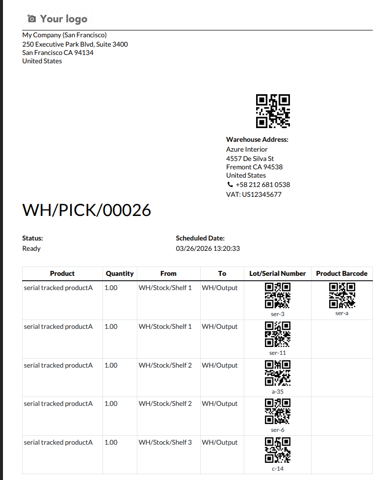

Render QR codes on the standard Stock Picking (Picking Operations) and Return Slip PDF reports — no template duplication, no Python overrides.
Also updates the Return Slip report so both default
barcodes (o.name and OBTRETU) are printed as QR codes.
The module inherits the standard QWeb reports and uses
xpath overrides only.
On the Picking Operations report
(stock.report_picking) it switches each existing
barcode widget to the QR symbology:
On the Return Slip report
(stock.report_return_slip) it converts both standard
barcode widgets to QR:
o.name) — barcode converted to QROBTRETU code — barcode converted to QRFor readability on printed reports, the encoded value is also shown as text under the Lot / Serial, Product, and Package QR codes.
Each QR code can be resized independently. Open
views/stock_picking_qr_codes.xml and edit the
t-options attribute for the code you want to change:
width / height — the rendered image resolution in pixels (controls sharpness; default 200 x 200).img_style — the on-page CSS size, for example width:80px;height:80px; for the document and package codes, and width:60px;height:60px; for the lot/serial and product codes.After saving the file, upgrade the module (Apps → Stock Picking QR Codes → Upgrade) for the new sizes to take effect.
Example — make the document QR code larger:
<attribute name="t-options">{'widget': 'barcode', 'symbology': 'QR',
'width': 300, 'height': 300,
'img_style': 'width:120px;height:120px;'}</attribute>
stock_picking_totals_report — if both modules are installed on the same database, the Picking Operations report will fail to render until two of the four QR templates are deactivated. The totals module rewrites the per-move-line row of the picking report, which removes the xpath targets for the lot/serial and product barcodes.
To fix:
stock_report_picking_qr_lot and untick Active.stock_report_picking_qr_product.The document-name and package QR codes still print; only the per-line lot/serial and product barcodes are skipped (they are no longer printed by the totals report anyway). Return Slip overrides are unaffected. Re-tick Active on both views if you later uninstall the totals module.
| Name | Stock Picking QR Codes |
|---|---|
| Version | 18.0.1.0.0 |
| Depends | stock |
| License | LGPL-3 |
| Author | SJR Nebula |
| Website | https://sjr.ie |
| Support | info@sjr.ie |